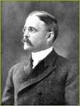

PORTRAITS
A – C
D – M
N – Z
Groups
N – Z
Naffziger, Howard C, 1917
Naffziger, Howard C
Nahm, Helen
Owyang, Eric
Pickering, Mary May
Porter, R. Langley
Proctor, Francis I.
Rutter, William
Saunders, John
Schmidt, Carl L.A.
Schmitt, Lionel
Schroeder, Steven A.
Searby, William
Shimkin, Michael
Sooy, Francis A.
Stone, Robert
Styles, Margretta M.
Taylor, Alonzo E
Toland, Hugh Huger
Toland, Hugh Huger
Tomkins, Gordon
Tracy, Margaret A.

Wheeler, Benjamin Ide
THE STORY
SPECIAL TOPICS
PEOPLE
PHOTOS
Portraits
Architecture
Healthcare, Research & Teaching
California History
BUILDINGS
HOME